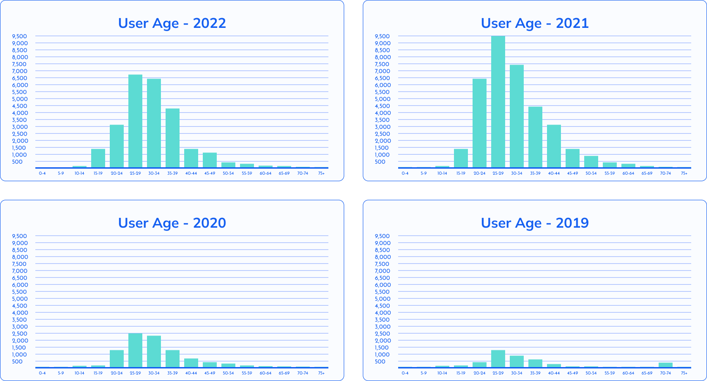
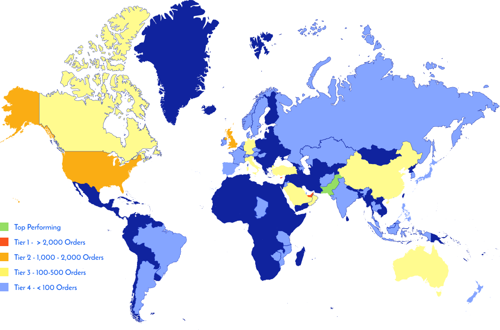
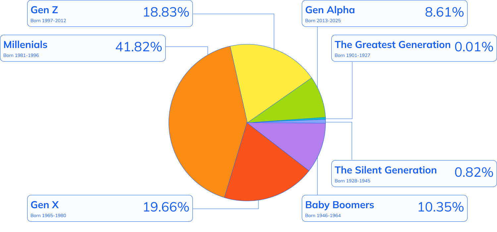
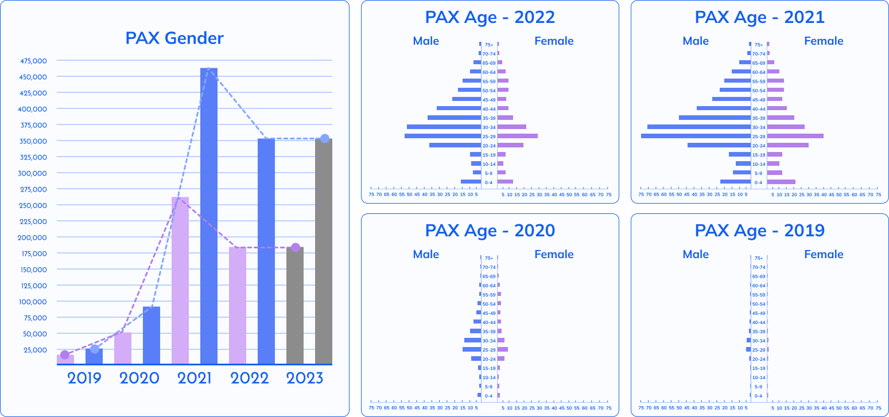
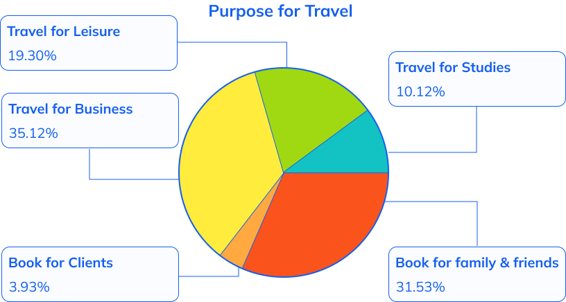
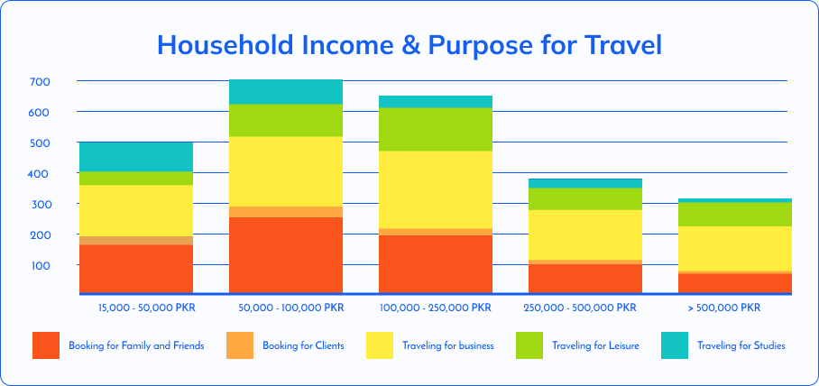

Market Segments Research
Research to guide product strategy
Market Segmentation · Quantitative Research · Survey Design · Data Analysis · Personas · Product Strategy
Company:
Sastaticket
Role:
UX Researcher
Year:
2022
Team:
Muiz Sani (Data Scientist) Aleena Hassan (Service Designer)
Problem
Sastaticket is an online travel agency that wanted to increase its international flight booking funnel but lacked a clear picture of its customer base to guide product strategy.
Task
I worked with a data scientist and a service designer to discover trends in booking. We began by defining eight segmentation criteria:
Demographic Segments
Classifies users using customer demographic data
Geographic Segments
Classifies users based on where they are located.
Generational Segments
Classifies users based on their generational group.
Life Stage Segments
Classifies users based on what stage they are in their lives.
Psychographic Segments
Classifies users based on their personality, opinions, and interests.
Behavioral Segments
Classifies users based on their decision-making patterns.
Seasonal Segments
Classifies users based on when they buy i.e. Holidays and events
Value Segments
Classifies users based on how much revenue/GMV they bring in.
Data analysis
We began by requesting all of the booking data on the platform since inception. Analysing 4 years of booking data revealed:

98.49 % of customers are from Pakistan with the UAE and Cyprus as the largest international markets.

Millennials accounted for approximately 42% of bookings.

Flight passengers frequently travelled with dependents.
Persona survey
We ran a persona survey across customers who had made frequent international bookings in the last year which received 3,616 respondents. The goal was to determine if there were any specific patterns between booking frequency, purpose of travel and income brackets.

The top purpose of travel is business in all income brackets, 1,269 respondents were business travelers.

Traveling for leisure peaks and declines after the 100,000 PKR income mark.
Outcome
The persona survey revealed that travelers mostly travelled for work and a majority of them were traveling to the UAE. This highlighted two new power users to the team, Pakistani expats working abroad and Chief executives in SMEs who were booking and traveling regularly. We conducted interviews with these respondents to understand their needs and pain points.

Chief Executives at SMEs
Frequently travels to the UAE for work, is usually making bookings through a team or agent. Is more concerned with visa issues as these cause the most delays. When visa is delayed they often incur a loss and is frustrated with refund delays.

Expats working in UAE
Often books tickets back to Pakistan to visit family and friends. Use the platform primarily because they pay less overall due to currency rates and transaction fees.
These findings led to the launch of a new Visas vertical, the development of a fintech product to assist with refund delay and a series of A/B tests with messages about lowered cost and savings on the platform.
Reflection
The data told us who was booking; only the interviews told us why. The analysis surfaced business travel to the UAE, but the visa and refund pain points behind the new visas vertical came from talking to SME owners and expats. I now plan research in pairs: data to find where to look, and conversations to find out what it means.